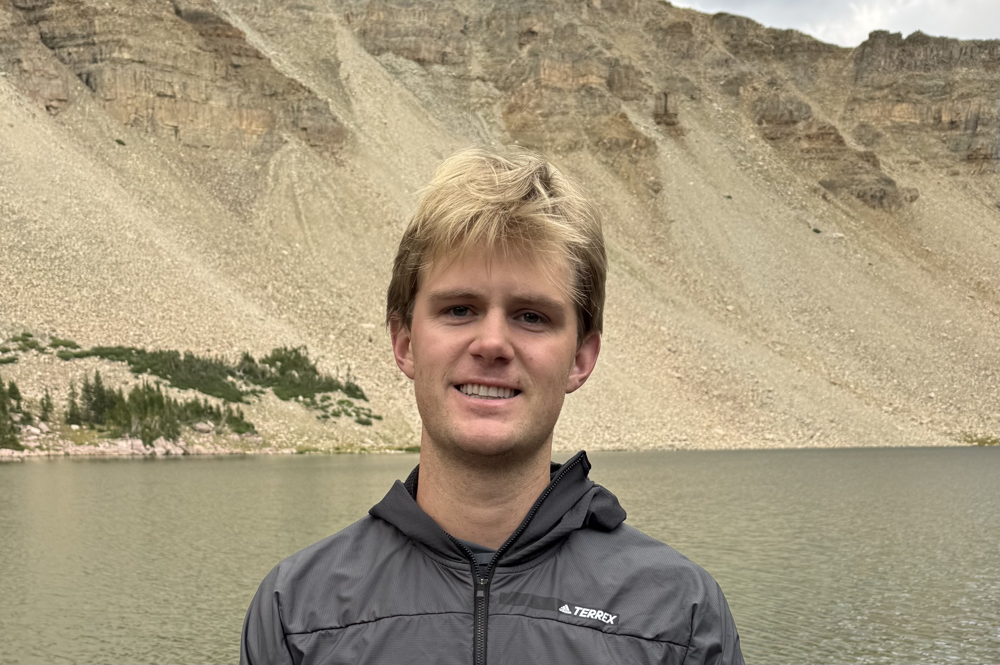
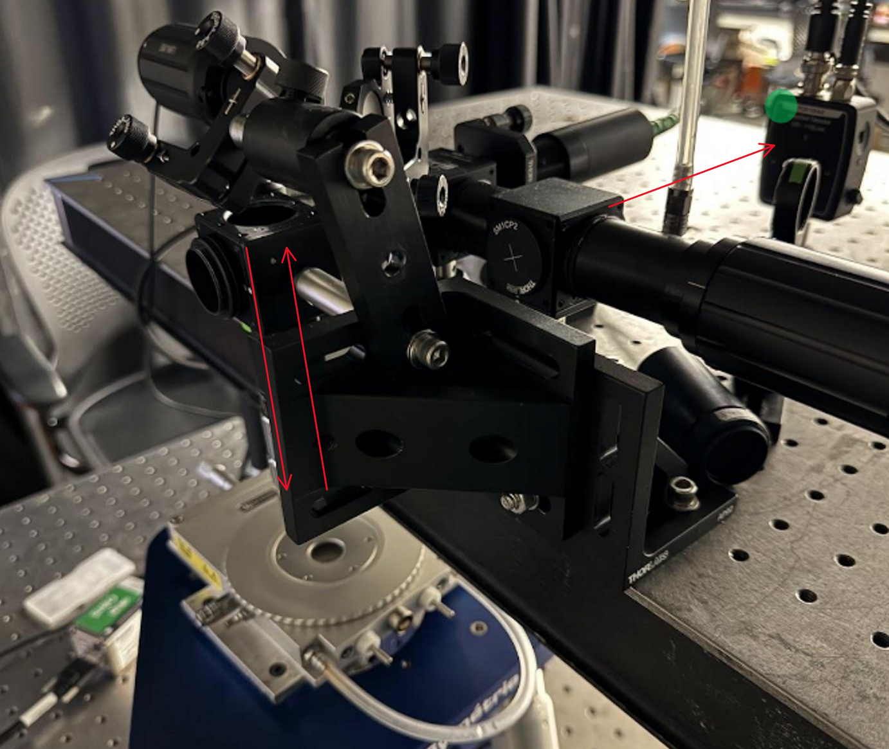
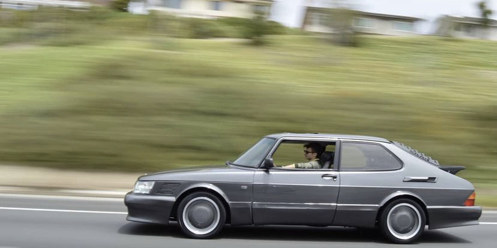
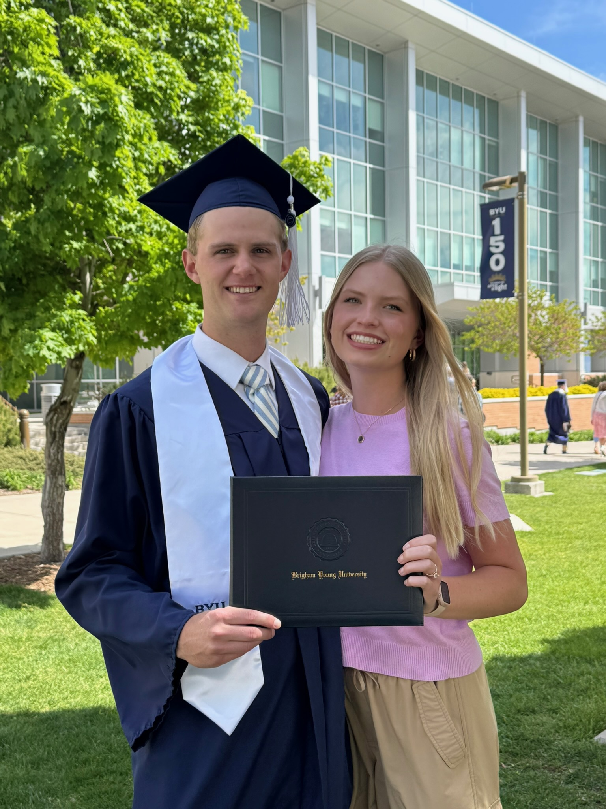
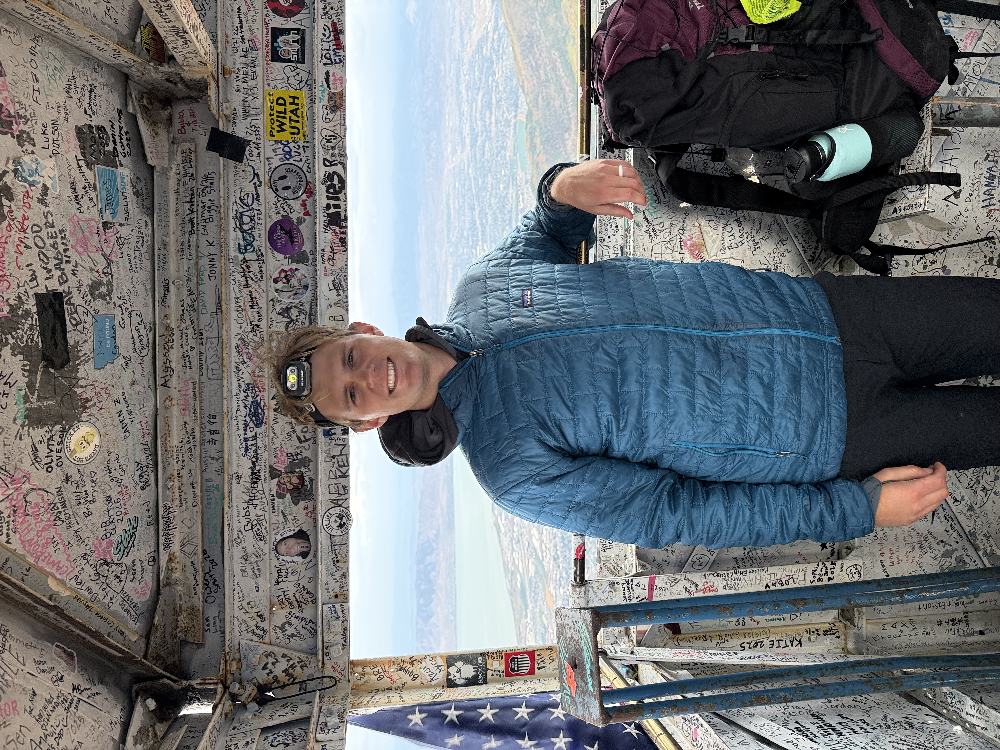
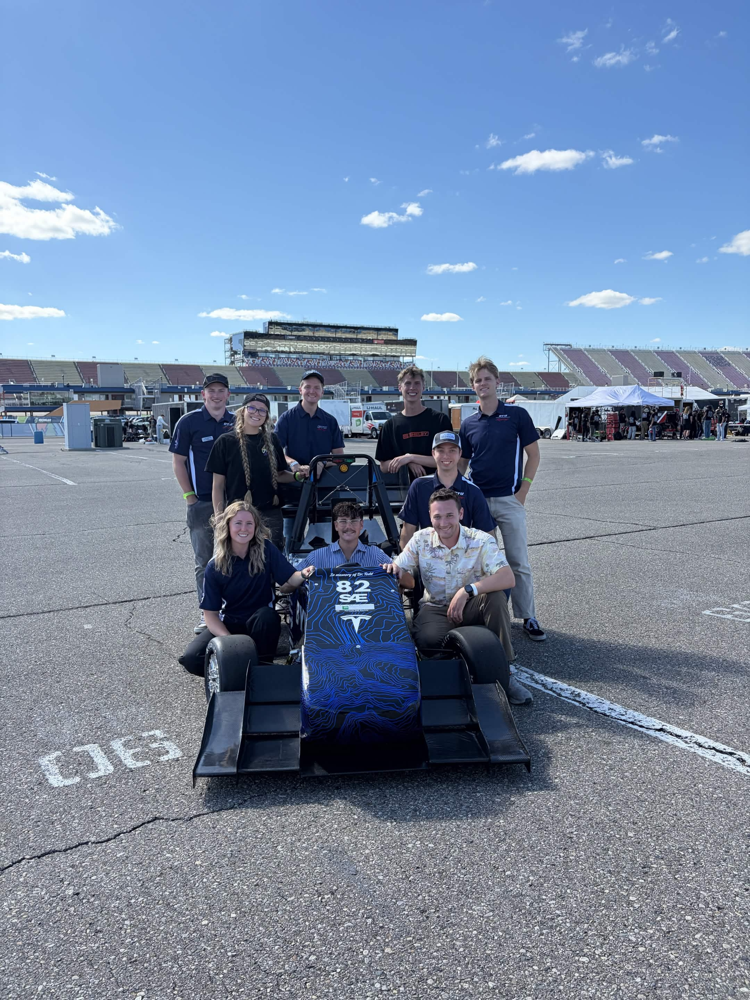
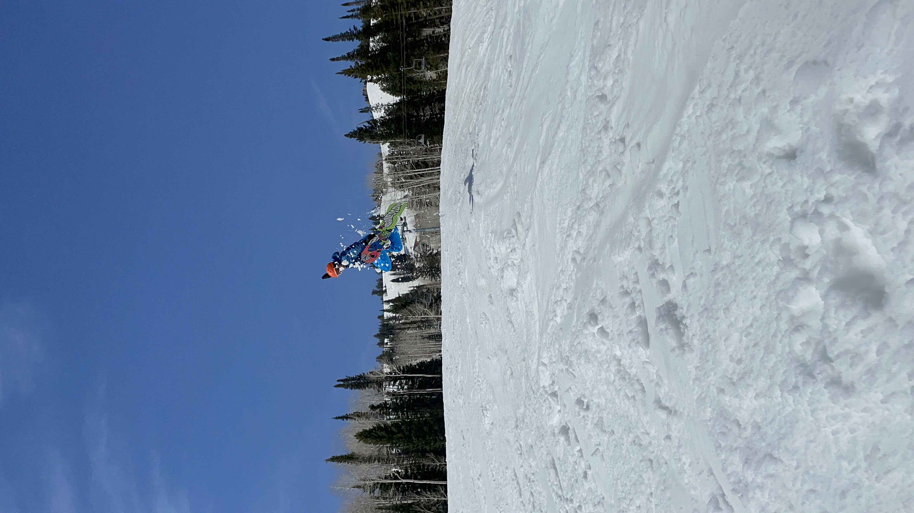
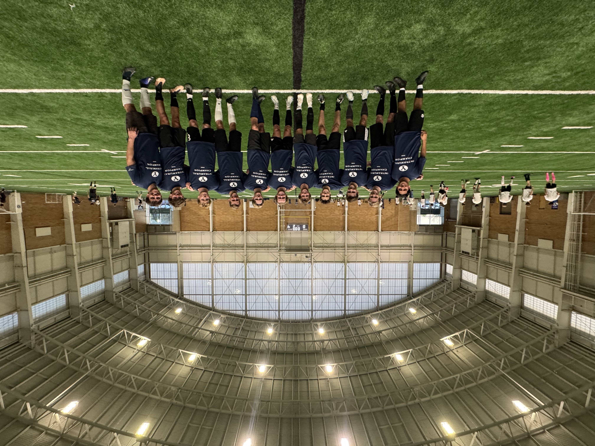
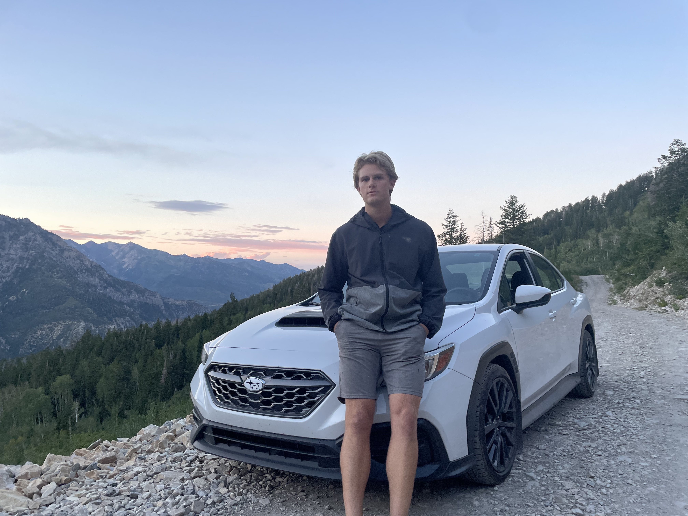

Beck Kesler
Mechanical Engineering
Mechanical engineering student with experience in CFD, automotive systems, experimental research, and hands-on mechanical design and testing.

Engineering Projects

STOL Hoverfoil Research
CFD modeling and testing of hydrofoils with underwing air injection to investigate lift and drag performance.

BYU Formula E
Powertrain development and tractive battery engineering for BYU's Formula SAE electric race car.

Thermal Spectroscopy Research
Experimental research using high-powered lasers to investigate thermal diffusivity of materials.

1991 Saab 900 Restoration
Hands-on restoration of mechanical, electrical, fuel, cooling, suspension, and interior systems.
About Me
Outside of engineering, I enjoy staying active, spending time outdoors, traveling, cooking, and working on projects of my own. I like learning about new topics and usually find myself picking up new hobbies or finding something new to build, fix, or explore.
A lot of my free time is spent hiking, snowboarding, playing sports, working on cars, and getting outside whenever I can. I enjoy both the technical side of making things and the opportunity to step away from engineering and spend time outdoors.
I graduated from Brigham Young University and married my wife, Ashleigh, in May 2026. We enjoy traveling, exploring new places, and spending time outdoors together.





